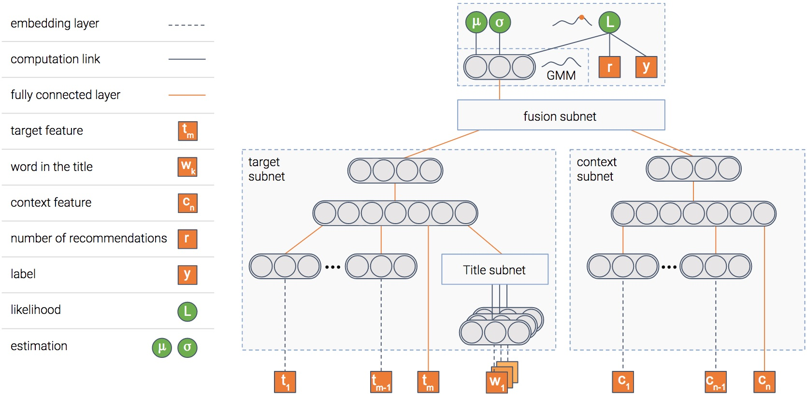
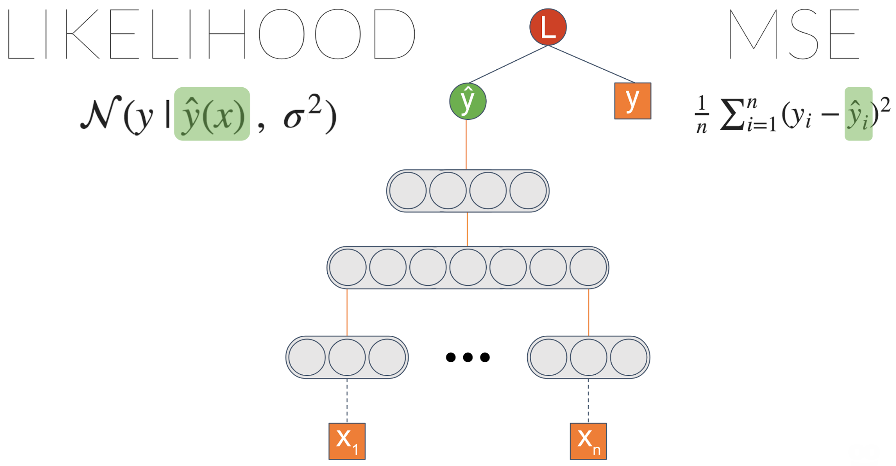
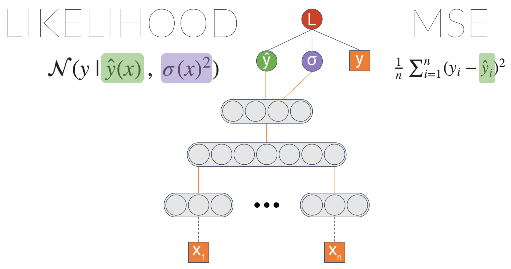
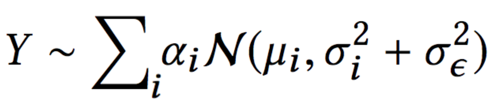
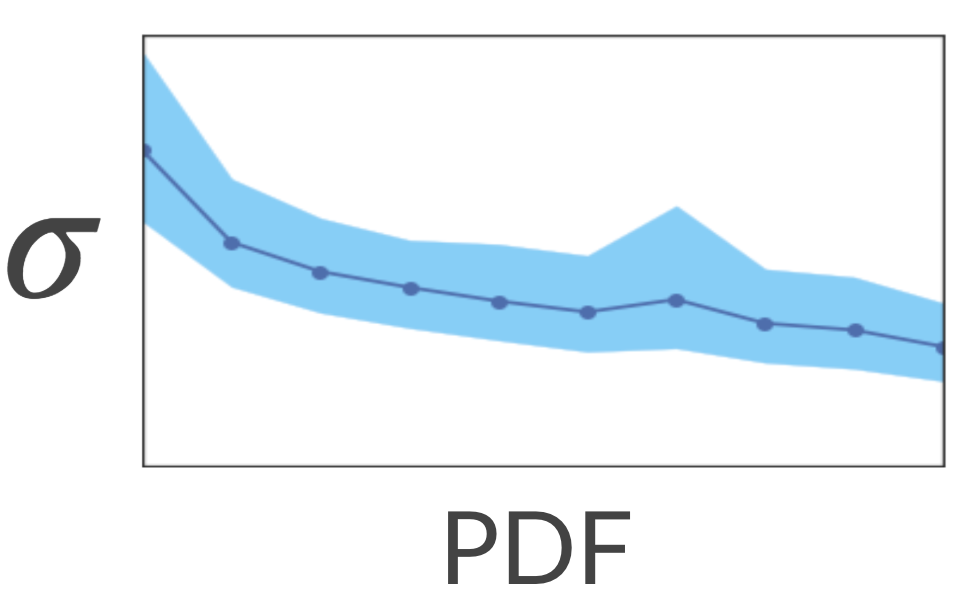
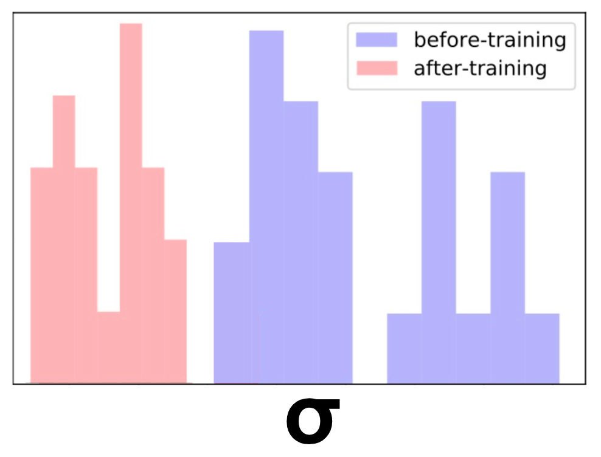

This is a joint post with Inbar Naor. Originally published at engineering.taboola.com.
In the first post of the series we discussed three types of uncertainty that can affect your model — data uncertainty, model uncertainty and measurement uncertainty. In the second post we talked about various methods to handle the model uncertainty specifically. Then, in our third post we showed how we can use the model’s uncertainty to encourage exploration of new items in recommender systems.
Wouldn’t it be great if we can handle all three types of uncertainty in a principled way using one unified model? In this post we’ll show you how we at Taboola implemented a neural network that estimates both the probability of an item being relevant to the user, as well as the uncertainty of this prediction.
Let’s jump to the deep water

A picture is worth a thousand words, isn’t it? And a picture containing a thousand neurons?...
In any case, this is the model we use. The model is composed of several modules. We’ll explain the goal of each one, and then the picture will become clearer...
Item module

The model tries to predict the probability that an item will be clicked, i.e — the CTR (Click Through Rate). To do so, we have a module that gets as input the item’s features such as its title and thumbnail, and outputs a dense representation — a vector of numbers if you will.
Once the model is trained, this vector will contain the important information extracted out of the item.
Context module

We said the model predicts the probability of a click on an item, right? But in which context is the item shown?
Context can mean many things — the publisher, the user, the time of day, etc. This module gets as input the features of the context. It then outputs the dense representation of the context.
Fusion module

So we have the information extracted out of both the item and the context. For sure, there’s some interaction between the two. For instance, an item about soccer probably will have higher CTR in a sports publisher compared to a finance publisher.
This module fuses the two representations into one, in a similar fashion to collaborative filtering.
Estimation module

At the end we have a module whose goal is to predict the CTR. In addition, it also estimates uncertainty about the CTR estimation.
I guess you’re mostly uncertain about how this module works, so let’s shed some light on it.
We’ll walk you through the three types of uncertainty we’ve mentioned, and show you how each one is handled by our model. First, let’s tackle the data uncertainty.
Data uncertainty
Let’s take some generic neural network trained on a regression task. One common loss function is MSE — Mean Squared Error. We like this loss because it’s intuitive, right? You want to minimize the errors... But it turns out that when you minimize MSE, you implicitly maximize the likelihood of the data — assuming the label is distributed normally with a fixed standard deviation $\sigma$. This $\sigma$ is the noise inherent in the data.

One thing we can do is explicitly maximize the likelihood by introducing a new node which we’ll call $\sigma$. Plugging it into the likelihood equation and letting the gradients propagate enable this node to learn to output the data noise.
We didn’t achieve anything different, right? We got an equivalent result to the initial MSE based model. However, now we can introduce a link from the last layer to $\sigma$:

Now we’re getting into something interesting! $\sigma$ is now a function of the input. It means the model can learn to associate different levels of data uncertainty with different inputs.
We can make the model even more powerful. Instead of estimating a Gaussian distribution, we can estimate a mixture of Gaussians. The more Gaussians we put into the mix, the more capacity the model will have — and more prone to overfitting, so be careful with that.
This architecture is called MDN — Mixture Density Network. It was introduced by Bishop et al. in 1994. Here is an example of what it captures:
We have two groups of similar items — one about shopping, and the other about sports.

It turns out the shopping items tend to have more variable CTR — maybe due to trendiness. Indeed, if we ask the model to estimate the uncertainty of one item in each group (the dotted graph in the figure), we get higher uncertainty for shopping compared to sports.

So data uncertainty is behind us. What’s next?
Measurement uncertainty

This one is a bit more tricky. In the first post we explained that sometimes measurement can be noisy. This might result in noisy features or even noisy labels. In our case, our label $y$ is the empiric CTR of an item — the number of times it was clicked so far, divided by the number of times it was shown.
Let’s say the true CTR of an item is $y^*$ — that is, without measurement noise. This would be the CTR had we shown the item infinite amount of times in the context. But time is finite (at least the time we’ve got), so we showed it only a finite amount of times. We measured an observed CTR $y$. This $y$ has measurement noise — which we denote by $\epsilon$.
Next, we assume $\epsilon$ is distributed normally with a $\sigma_\epsilon$ as the standard deviation. $\sigma_\epsilon$ function of $r$ — the number of times we showed the item. The bigger $r$ is, the smaller $\sigma_\epsilon$ gets, which makes $y$ more similar to $y^*$.
At the end of the day, after we spare you from the mathematical details (which you can find in our paper), we get this likelihood equation:

This is the same as the likelihood we have in the MDN architecture of a mixture of Gaussians, with one difference — the error term is split to two:
- data uncertainty ($\sigma_i$)
- measurement uncertainty ($\sigma_\epsilon$)
Now that the model is able to explain each uncertainty using a different term, the data uncertainty is not polluted by the measurement uncertainty.
Besides being able the explain the data in a better way, this allows us to use more data in the training process. This is due to the fact that prior to this work we filtered out data with too much noise.
Last but not least
In a previous post we discussed how to handle model uncertainty. One of the approaches we described was using dropout at inference time.
Being able to estimate model uncertainty allows us to understand better what the model doesn’t know because of lack of data. So let’s put it to the test!
Let’s see if unique titles are associated with high uncertainty. We’ll map each title in the training set to a dense representation (e.g. average word2vec embeddings) and expect the model to be less certain about unique titles — titles that are mapped to sparse regions of the embedding space.
To test it, we calculated the sparse and dense regions by calculating KDE (Kernel Density Estimation). This is a method for estimating the PDF (Probability Density Function) of our space. Next, we asked the model to estimate the uncertainty associated with each title. It turns out that indeed the model has higher uncertainty in the sparse regions!

Nice... What would happen if we show the model more titles from the sparse regions? Will it be more certain about these regions? Let’s test it out!
We took a bunch of similar titles about cars and removed them from the training set. Effectively, it altered their region in the space from dense to sparse. Next, we estimated the model uncertainty over these titles. As expected, the uncertainty was high.
Finally, we added only one of the titles to the training set and retrained the model. To our satisfaction, now the uncertainty has reduced for all of these items. Neat!

As we saw in the post about exploration-exploitation, we can encourage exploration of these sparse regions. After doing so, the uncertainty will decrease. This will result in a natural decay of exploration of that region.
Final thoughts
In this post we elaborated on how we model all three types of uncertainty — data, model and measurement — in a principled way, using one unified model.
We encourage you to think how you can use uncertainty in your application as well! Even it you don’t need to explicitly model uncertainty in your prediction, you might benefit from using it in the training process — if your model can understand better how data is generated and how uncertainty affects the game, it might be able to improve.
This is the forth post of a series related to a paper we're presenting in a workshop in this year KDD conference: deep density networks and uncertainty in recommender systems.
The first post can be found here.
The second post can be found here.
The third post can be found here.
Originally published at engineering.taboola.com by me and Inbar Naor.
Comments !